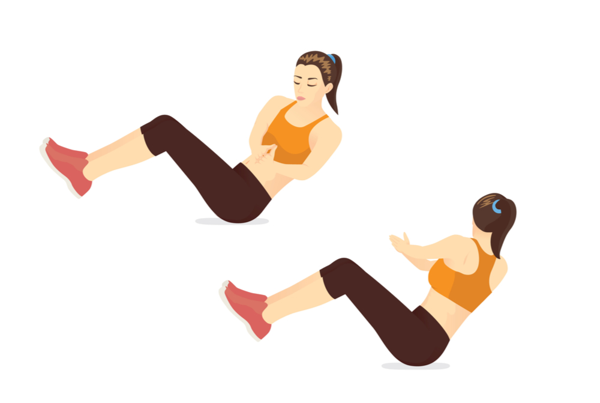

Squats are the queen of all exercise. The squat is a dynamic strength training exercise that requires several muscles in your upper and lower body to work together simultaneously. Many of these muscles help power you through daily tasks such as walking, climbing stairs, bending, or carrying heavy loads. They also help you perform athletic-related activities.
Here are some squat benefits:
Strengthens your core
Reduces the risk of injury.
Crushes calories
Strengthens the muscles of your lower body.
Boosts athletic ability and strength
Variety helps with motivation.
Lunges
A proper lunge posture can help you achieve a stronger and more stable core. This workout engages your core and abdominal muscles. It helps you build stability which when you move your hips up and down. A stronger core allows you deal with lower back pain and improves your balance and posture as well.
Here are some lunge benefits:
Weight loss
Balance improvement
Stability
Boosts athletic ability and strength
Variety helps with motivation.
Crunches
The crunch is one of the most popular abdominal exercises. When performed properly, it engages all the abdominal muscles but primarily it works the rectus abdominis muscle and the obliques. It allows both building six-pack abs, and tightening the belly.
Here are some crunch benefits:
Strengthens your core
Strengthening Your Abs
Boosts athletic ability and strength
Variety helps with motivation.
Mountain climbers
Mountain climbers are great for building cardio endurance, core strength, and agility. You work several different muscle groups with mountain climbers—it's almost like getting a total-body workout with just one exercise.
Here are some mountain climbers benefits:
Strengthens your core
Strengthening Your Abs
Strengthening Your Arms
Boosts athletic ability and strength
Variety helps with motivation.
Jumping jacks
A jumping jack is a physical jumping exercise performed by jumping to a position with the legs spread wide and the hands going overhead, sometimes in a clap, and then returning to a position with the feet together and the arms at the sides.
Here are some jumping jacks benefits:
Weight loss
Cardio excercise
Boosts athletic ability and strength
Variety helps with motivation.
Russian twist
The Russian twist is a type of exercise that is used to work the abdominal muscles by performing a twisting motion on the abdomen
Here are some jumping jacks benefits:
Abs excercise
Core strenght
Boosts athletic ability and strength
Variety helps with motivation.

Burpee
The burpee, a squat thrust with an additional stand between reps, is a full body exercise used in strength training and as an aerobic exercise. The basic movement is performed in four steps and known as a "four-count burpee"
1. Begin in a standing position.
2. Move into a squat position with your hands on the ground
4. Kick your feet back into a plank position, while keeping your arms extended
4. Immediately return your feet into squat position
5. Stand up from the squat position
Push-up
Push-ups target the chest, shoulders, and triceps and work your core, back, and legs.
Here are some push-up benefits:
Muscle Stretching for Health and Vitality
Core strenght
Enhance Your Cardiovascular System
Variety helps with motivation.
Here are some results after doing 10 reps of each of this exercises for 30 days...